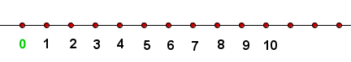

En esta parte de la página web vas a encontrar temario de primaria para que refuerces
tus conocimientos en matemáticas. Encontrarás material actualizado para poder estudiar los temas
que se te dificulten o para adelantar en tus clases.
En el menú de la izquierda tienes disponible todo el temario de matemáticas del curso de 6º de
primaria
en el cual encontrarás información muy útil para repasar todos los conceptos que habrás dado hasta
ahora.
Los números naturales
Los numeros naturales son los que utilizamos en la vida cotidiana para contar u ordenar.
El conjunto de los números naturales se representa por ℕ y está formado por:
ℕ = {0, 1, 2, 3, 4, 5, 6, 7, 8, 9, ...}
Nosotros consideramos que 0 es un número natural, aunque no todos los autores están de acuerdo.
Los números naturales son ilimitados, si a un número natural le sumamos 1, obtenemos otro número
natural.
Los números naturales están ordenados, lo que nos permite comparar dos números naturales entre sí.
Los números naturales se pueden representar en una recta ordenados de menor a mayor.
Sobre una recta señalamos un punto, que marcamos con el número cero (0).
A la derecha del cero, y con las mismas separaciones, situamos de menor a mayor los siguientes
números naturales: 1, 2, 3

Operador
Lectura
Ejemplo
Lectura
=
Igual
4 = 4
4 es igual a 4
<
Menor que
4 < 10
4 es menor que 10
<=
Menor o igual
3 <= 3
3 es menor o igual que 3
>
Mayor que
12 > 8
12 es mayor que 8
>=
Mayor o igual
5>=5
5 es mayor o igual que 5
Geometría
La palabra geometría es una palabra compuesta del prefijo geo, de origen griego, que hace referencia
a todo aquello relacionado con la tierra; y metría que implica el concepto de medición.
La recta
La recta es un conjunto de puntos colocados unos detrás de otros en la misma dirección.
La línea recta no tiene principio ni fin. Cuando dibujamos una línea recta, en realidad,
representamos una parte de ella. Unas veces la representamos con dos letras mayúsculas que se
refieren a dos de sus puntos, o bien, con una letra minúscula.
Cuando en una recta señalas un punto, a cada uno de los tramos a ambos lados de la misma llamamos
semirrecta
Como puedes observar, la recta que pasa por el punto A ha quedado dividida en dos partes
representadas por las semirrectas m y n.
Podemos decir que una semirrecta es parte de una recta que tiene principio u origen y no tiene fin.
Las semirrectas m y n, tienen origen en A.
Las dos semirrectas de una misma recta siempre son opuestas y además tienen el mismo origen. Las
puntas de flecha nos indican que tienen sentidos OPUESTOS o CONTRARIOS, la semirrecta m tiene
sentido hacia la izquierda y la semirrecta n tiene sentido hacia la derecha.
Fracciones
Una fracción representa el número de partes que cogemos de una unidad que está dividida en partes
iguales. Se representa por dos números separados por una línea de fracción.
Los términos de una fracción son el numerador y el denominador. El numerador es el número de partes
que tenemos y el denominador es el número de partes en que hemos dividido la unidad.
Vamos a ver un ejemplo: Tenemos diferentes figuras y cada una de ellas la dividimos en diferentes
partes iguales, que es el denominador.
El numerador se lee con los números cardinales. 1 – un, 2 – dos, 3 – tres, …, 10 – diez, …, 24 –
veinticuatro…
El denominador se lee con los números partitivos. 2 – medios, 3 – tercios, 4 – cuartos, 5 – quintos,
6 – sextos, 7 – séptimos, 8 – octavos, 9 – novenos, 10 – décimos. A partir del 11, el número se lee
terminado en -avos: 11 – onceavos, 12 – doceavos, …
En el video inferior puedes ver como se opera con fracciones:
Para reforzar tu aprendizaje, aquí tienes unas actividades para operar con fracciones:
📂